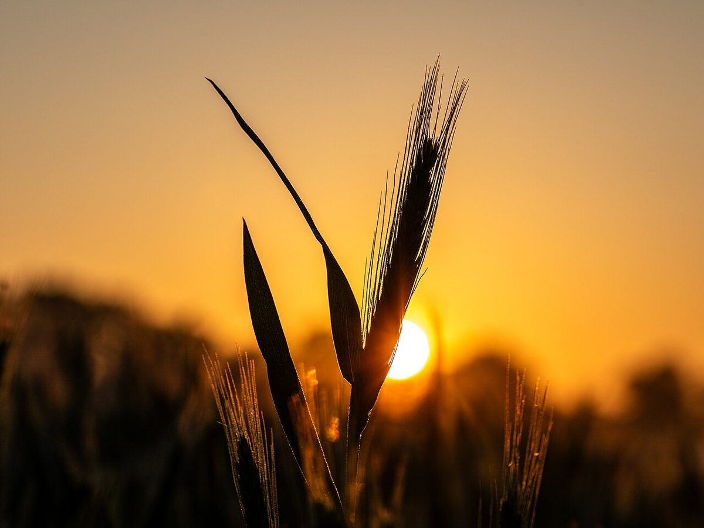
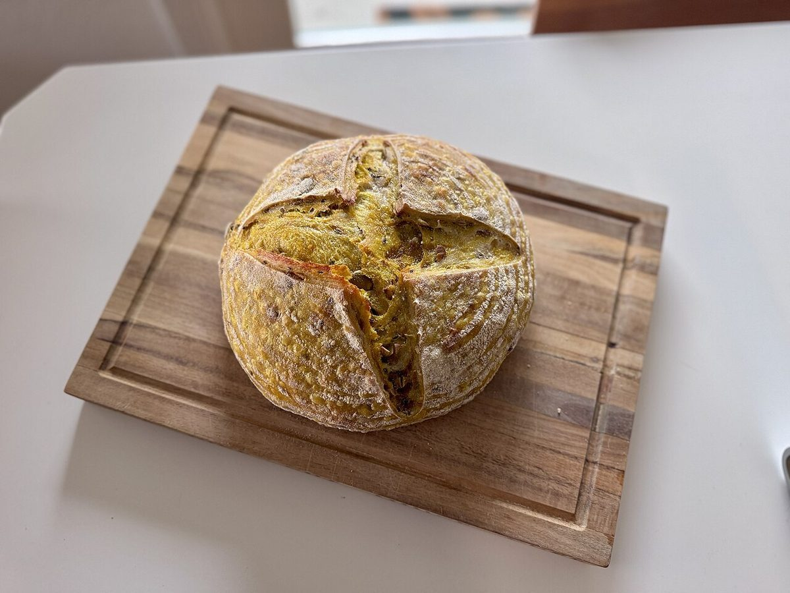

濃
店のこと
店のこと
お店について確認できているのは、所在地とInstagramのアカウントだけです。
このページの「想像してみる」部分は、制作側が想像して書いたものです。お店の実際の様子・考え・商品とは関係がありません。
確認できていること
- 店名は「Urusumi」、業種はパン屋
- 所在地は愛媛県伊予市双海町大久保甲746(〒799-3311)
- 電話番号はなし。連絡はInstagramから
- 営業時間・定休日・メニュー・価格・ご予約・駐車場は準備中

想像してみる(制作側の連想)
濃い墨は、すり始めの色。

墨は、すずりに水をたらし、墨を静かにすり進めるほど濃くなっていくそうです。パンの生地が、時間とともに少しずつ育っていく様子と重なるように、制作側には思えました。
ここは「濃」のページ。五彩のなかでも黒が深く、いちばん落ち着いた色です。お店の様子ではなく、あくまで制作側の連想です。
墨は、すり始めの色